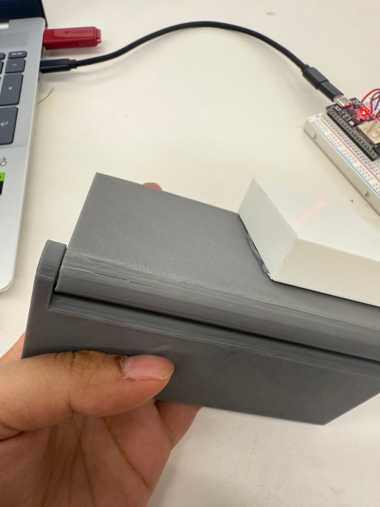

<div class="textcontainer">
<p class="margin"> </p>
<h3>Week 7: Electronic Outputs</h3>
<h4>Assignment: Minimum Viable Product for Final Project</h4>
<p class = "margin"></p>
<h4>Purpose of My Final Project:</h4>
My final project aims to automate the process of folding origami. However, I realized it would be better to start simple, with basic 2D folds. In origami, simple creases and grid folds form the foundation for complex structures. For my MVP, I wanted to create a mechanism that could perform a single fold automatically. It sounded easy, “just one fold!” but I soon discovered that even this single action involves a surprising amount of mechanical and design complexity.
<p class = "margin"></p>
<h4>Designing the Folding Mechanism</h4>
I began by exploring how to build a folding hinge. I followed a <a href="https://www.youtube.com/watch?v=w1o48laHAos">YouTube tutorial</a> to 3D print a hinge mechanism because standard metal hinges have a raised middle section that prevents clean folds.
<p class = "margin"></p>
<video width="180" height="320" autoplay muted>
<source src="red_hinge_vid.mp4" type="video/mp4">
Your browser does not support the video tag.
</video>
<p class = "margin"></p>
Initially, I tried scaling the hinge by simply enlarging the face sizes, but this made the mechanism unstable since the thin connecting rod snapped easily.
<p class = "margin"></p>
<p class = "margin"></p>
To solve this, I increased both the thickness and face size, printing two new versions.
<p class = "margin"></p>
<p class = "margin"></p>
The grey hinge moved smoothly, while the black hinge, though thicker, jammed due to tight tolerance. This taught me that if I increase the rod size, I must also adjust the tolerance accordingly.
<p class = "margin"></p>
<video width="640" height="360" autoplay muted>
<source src="grey_hinge_vid.mp4" type="video/mp4">
Your browser does not support the video tag.
</video>
<p class = "margin"></p>
Using the dimensions of the grey hinge’s pin, I printed another version with a longer body so it could fold a larger sheet of paper. I also realized that the length of the hinge mechanism mattered more than the face size since the hinge’s rotation drives the fold. This print worked decently but cracked near the second body, showing I would need to increase thickness in future iterations.
<p class = "margin"></p>

<p class = "margin"></p>
<h4>Implementing Folding Mechansim</h4>
With a working hinge prototype, it was time to automate the fold. Inspired by Manas’s project (a previous PS70 student), I decided to use a servo motor to push one hinge face downward, creating the fold. I needed a servo mount that would press-fit tightly since 3D printing doesn’t allow for precise grooves. After experimenting with multiple diameters, 4.9 mm provided the best fit, though still a bit loose. In the future, I’d like to explore custom servo horns or printed attachments for better stability.
<p class = "margin"></p>
<p class = "margin"></p>
<h4>Circuit and Code</h4>
For input, I used a push button that triggers the servo when pressed.Initially, the board didn’t detect the button, but after replacing it and using the reset switch a few times, the setup finally worked.
<p class = "margin"></p>
<p class = "margin"></p>
Here’s the code I used to integrate the button (input) and servo (output):
<p class = "margin"></p>
<pre><code>
#include <ESP32Servo.h>
Servo myservo; // create servo object to control a servo
int pos = 0; // variable to store the servo position
int ButtonPin = 14;
int ServoPin = 12;
void setup() {
myservo.attach(ServoPin);
myservo.write(pos);
pinMode(ButtonPin, INPUT_PULLUP);
Serial.begin(9600);
}
void loop() {
int ButtonState = digitalRead(ButtonPin);
Serial.println(ButtonState);
if (ButtonState == LOW) {
myservo.write(180);
delay(1000);
myservo.write(0);
delay(1000);
}
}
</code></pre>
<p class = "margin"></p>
The servo was programmed to rotate the hinge’s face to perform the fold.
<p class = "margin"></p>
<video width="360" height="640" autoplay muted>
<source src="folding_mechanism.mp4" type="video/mp4">
Your browser does not support the video tag.
</video>
<p class = "margin"></p>
Then I attached the servo mount to the back face of the hinge to initiate the fold.
<p class = "margin"></p>
<p class = "margin"></p>
<h4>Enclosure and First MVP Test</h4>
I laser-cut platforms to create an enclosure for the hinge and servo to sit securely. However, I ran into a major issue when testing. The servo lacked sufficient torque to move the hinge face. Additionally, the mount connection was loose, causing the motor to spin independently without actually folding the paper.
<p class = "margin"></p>
<video width="640" height="360" autoplay muted>
<source src="failed_mvp.mp4" type="video/mp4">
Your browser does not support the video tag.
</video>
<p class = "margin"></p>
I realized that attaching the servo mount directly to the hinge face was the root cause of the malfunction. The rotation was following a circular path rather than a fixed axis, and because the servo’s position relative to the mount was fixed, it failed to operate smoothly. To address this, I created another iteration where I detached the two components.
<p class = "margin"></p>
<video width="640" height="360" autoplay muted>
<source src="right_mvp.mp4" type="video/mp4">
Your browser does not support the video tag.
</video>
<p class = "margin"></p>
However, a new issue emerged, once the hinge folded, it wouldn’t fold back down, and the servo mount continued to detach. For proper motion, the mount needed to move along with the hinge face, but that meant redesigning the structure. I might need to adopt a configuration like this:
<p class = "margin"></p>
<p class = "margin"></p>
<h4>Lessons Learned and Next Steps</h4>
Through this MVP, I learned that even a seemingly simple folding mechanism involves lots of iterative refinement.Before my next design review, I plan to:
Strengthen the hinge by increasing inner wall thickness.
<ol>
<li>Strengthen the hinge by increasing inner wall thickness.</li>
<li>Experiment with a hinge that allows a greater turning angle.</li>
<li>Use a servo with higher torque.</li>
<li>Improve the servo horn connection, possibly using screws for a tighter fit.</li>
<li>Explore a more reliable method for attaching the paper to the hinge, since double-sided tape caused crumpling.</li>
<li>Continue iterating to fine-tune tolerances and ensure servo and hinge alignment.</li>
</ol>
<p class = "margin"></p>
<h4>Oscilloscope Findings</h4>
I used an oscilloscope to analyze the output signal of my circuit. The time domain measured was 20 milliseconds, confirming that the servo operates on a fixed clock. When the button was pressed, the signal stayed high longer, but the total cycle duration remained constant. The operating frequency or speed is calculated as: Frequency=1000/20=50 Hz.
<p class = "margin"></p>
Here is a video of the oscilloscope, when the button is pressed thus changing the signal to the servo motor!
<p class = "margin"></p>
<video width="640" height="360" autoplay muted>
<source src="oscillioscope_vid.mp4" type="video/mp4">
Your browser does not support the video tag.
</video>
</div>